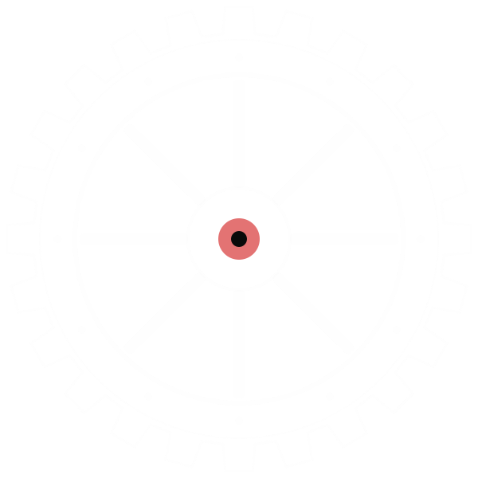
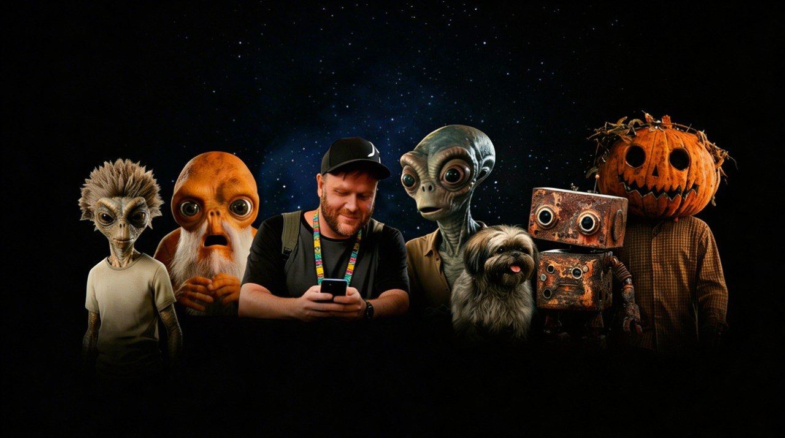
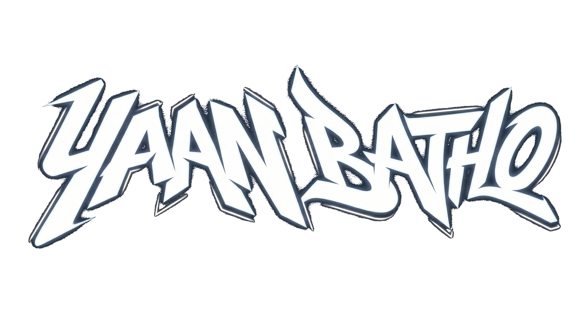
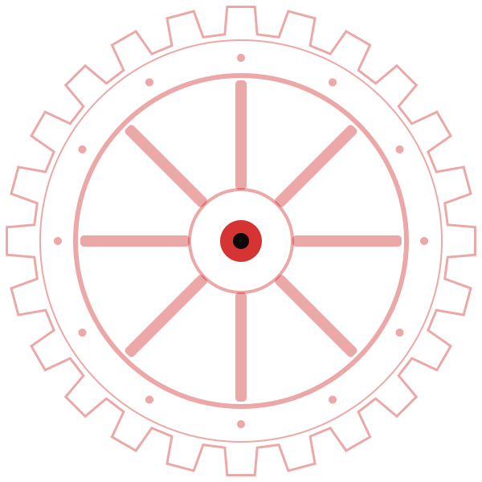
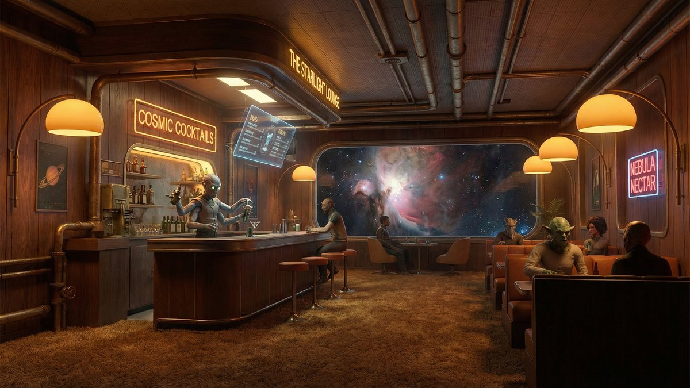
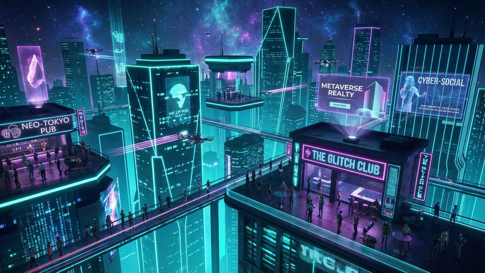
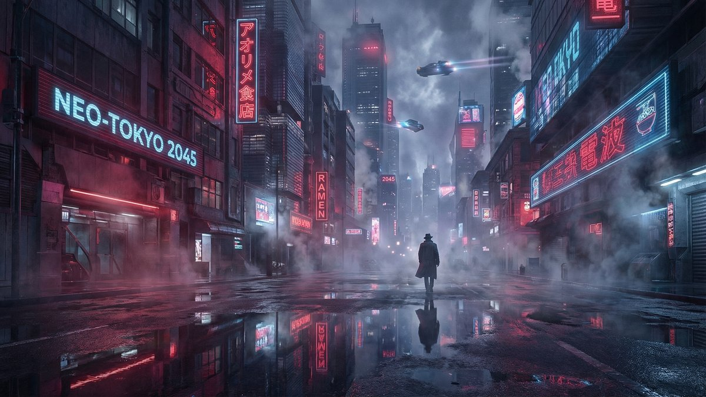

Yaan Batho — Creative AI Studio
CREATIVE AI STUDIO · EST. 2026


I machine light into worlds. Cinematic media, autonomous systems and playable ideas — cut, welded and polished in a studio that never powers down.

LVL 01 · THE STUDIO
I MACHINE LIGHT INTO WORLDS.
This is the studio of Yaan Batho, built like a machine room. Raw model output comes in on the lift; finished worlds leave on the floor below — sitcoms shot in space bars, agents that publish good news while you sleep, quarries you can drive, birds that fight.
Everything is built in public by Yaan Batho, with a resident astronaut keeping the cogs oiled. If it can be imagined, it can be machined.
LVL 02 · THE FOUNDRY
Selected works
Hover to inspect · click to open
-
01
Orion's Barrel
Space sitcom · AI video

-
02
Chifftown / Chifly
Virtual pubs · WebRTC

-
03
Good News 24
Positive media engine

-
04
QuarryPro
Quarry sim prototype

-
05
ROBOTIQUE — 2045
Cyberpunk RPG

- 06 BURBZ Bird companions · AI
- 07 Nomad Trip Planner Park-ups · weather · maps
- 08 Nomad Toolkit Vanlife helper stack
- 09 Unknown Three.js ocean study
- 10 Full Archive Open every build file



LVL 03 · ENGINE ROOM
What the machines run on
LVL 04 · CREW QUARTERS
Studio status
CREW FILE · 001
BATHO-01 — Resident Astronaut
Keeps the lifts oiled and the cogs turning. Usually found pacing the studio floor or the rafters; rides the lift between shifts, grapples when he's in a hurry, and will absolutely tell you about pies if you click him. You can pick him up and drop him — he packed a parachute.
LVL 05 · TRANSMISSION DECK
MAKE LIGHT WORK.
Need a scrappy AI tool, a cinematic world, a weird prototype, a game loop or an automation built quickly? Send the brief — the foundry is hot.